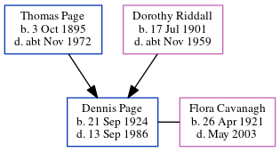

Dennis Gordon Page 1924 - 1986
[ Home ] | [ Calendar ] | [ Surnames Index ] | [ Census Index ] | [ Family History ]The older of 2 children of Thomas Page (a bricklayer) and Dorothy Riddall, Dennis Page, the fourth cousin on the father's side of Nigel Horne, was born in Elham, Kent, England on Sep 21, 19241,2,3. He married Flora Cavanagh in Folkestone, Kent, England around Feb 19475.
During his life, he was living at 37 Sidney Street in Folkestone on Sep 29, 19391; and at 31 Denmark Street in Folkestone in 1986.
He died on Sep 13, 1986 in Shepway, Kent, England3,4.
Parents
- Thomas Victor was born on Oct 3, 1895
- Dorothy I was born on Jul 17, 1901
Citations
- 1939 Register - Findmypast (was the son of the head of the household)
- England & Wales births 1837-2006 - Findmypast
- England & Wales deaths 1837-2007 - Findmypast
- England & Wales Government Probate Death Index 1858-2019 - Findmypast
- England & Wales Marriages 1837-2005 - Findmypast
Media
1939 Register - TNA/R39/1721/1721C/004/20
England & Wales births 1837-2006 - BMD/B/1924/4/AZ/000948/003
England & Wales marriages 1837-2005 - BMD/M/1947/1/AZ/000887/004
England & Wales deaths 1837-2007 - BMD/D/1986/9/75722213
England & Wales Government Probate Death Index 1858-2019 - GBOR/GOVPROBATE/C/1986-1986/00154921
Family Tree
Generated by ged2site. Last updated on Jun 11, 2024